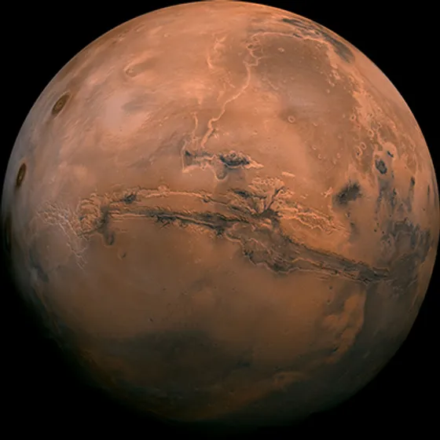

Mars, the fourth planet from the Sun, is the only planet we know of inhabited entirely by robots. It's dry, rocky, and bitterly cold. Mars is one of Earth's two closest planetary neighbors, with Venus being the other. Despite its inhospitable conditions for humans, robotic explorers, including NASA's Perseverance rover, are serving as pathfinders to eventually get humans to the surface of the Red Planet.
Mars:— is no place for the faint-hearted. It’s dry, rocky, and bitterly cold. The fourth planet from the Sun, Mars is one of Earth's two closest planetary neighbors (Venus is the other). Mars is one of the easiest planets to spot in the night sky – it looks like a bright red point of light. Despite being inhospitable to humans, robotic explorers – like NASA's Perseverance rover – are serving as pathfinders to eventually get humans to the surface of the Red Planet.
